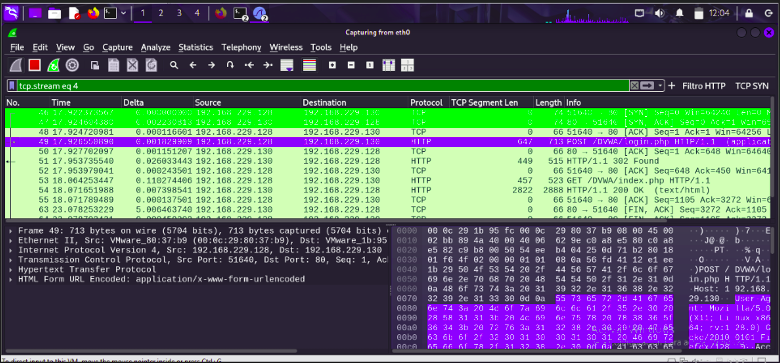

Interceptación de Tráfico (Sniffing)
La captura de paquetes en entornos de red virtualizados permite analizar los flujos de comunicación. Cuando protocolos como HTTP se utilizan sin cifrado (SSL/TLS), un atacante posicionado en la misma red puede interceptar el tráfico para extraer credenciales en texto plano, tal como se evidencia en la lectura de métodos POST.